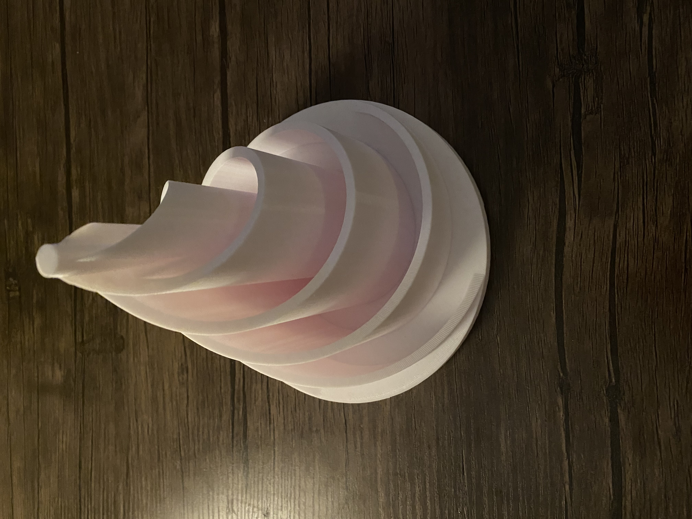
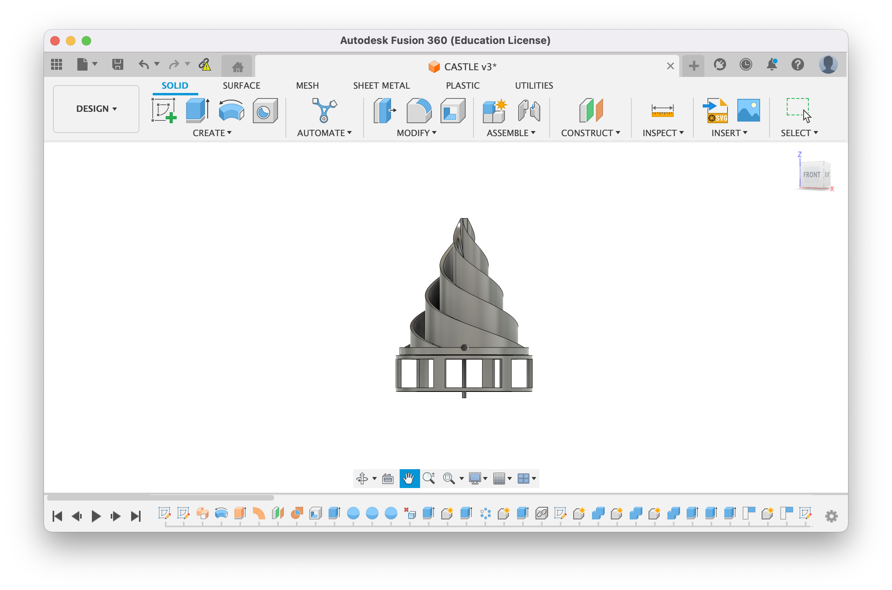

<br>
<h1>Week 5: 3D Printing</h1>
<br>
<div>
<p>
I invested a significant and ultimately inordinate amount of time into improving my Fusion 360 modeling
skills, attempting to create a perfect sophisticated design that was beyond the level of my abilities. In
the service of time I scaled back my design to create something more practically feasible and settled on a
tower-like spiral. I have also attached the 3D printed files related to the motor head attachment and motor body housing.
</p>
 <img src="MotorAttachments.jpeg" width="300" height="300">
<br>
<br>

<br>
<a download href='./Spiral v3.f3z'>Download my f3z file
<br>
<a download href='./Spiral Tower Final Draft.stl'>Download my STL file
<br>
<a download href='./Spiral Sculpt.gcode'>Download my G-Code file
<br>
<a download href='./Motor Housing Final.stl'>Download my motor housing STL file
<br>
<a download href='./Attachment Piece.stl'>Download my motor attachment STL file
</div>